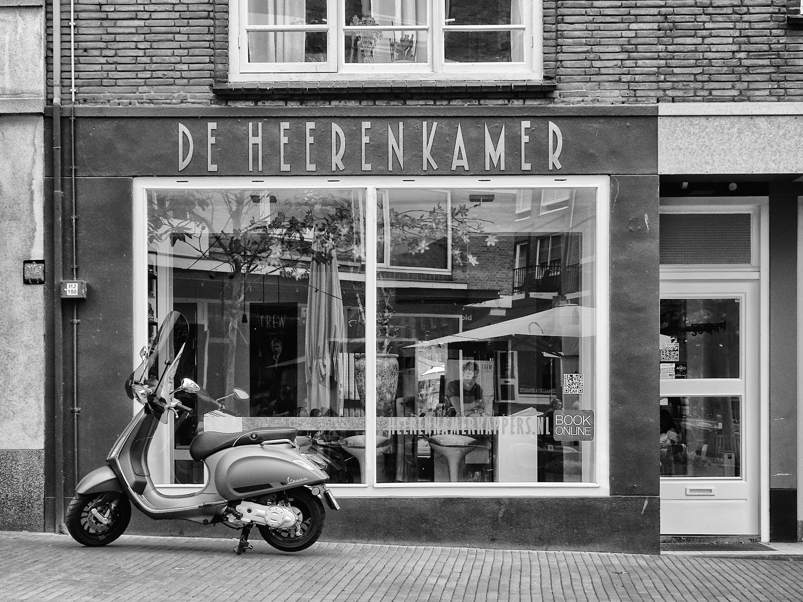
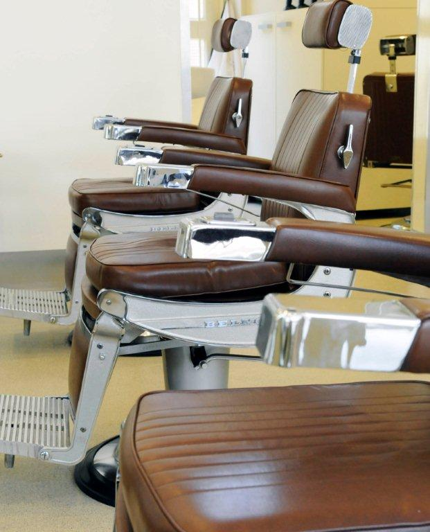
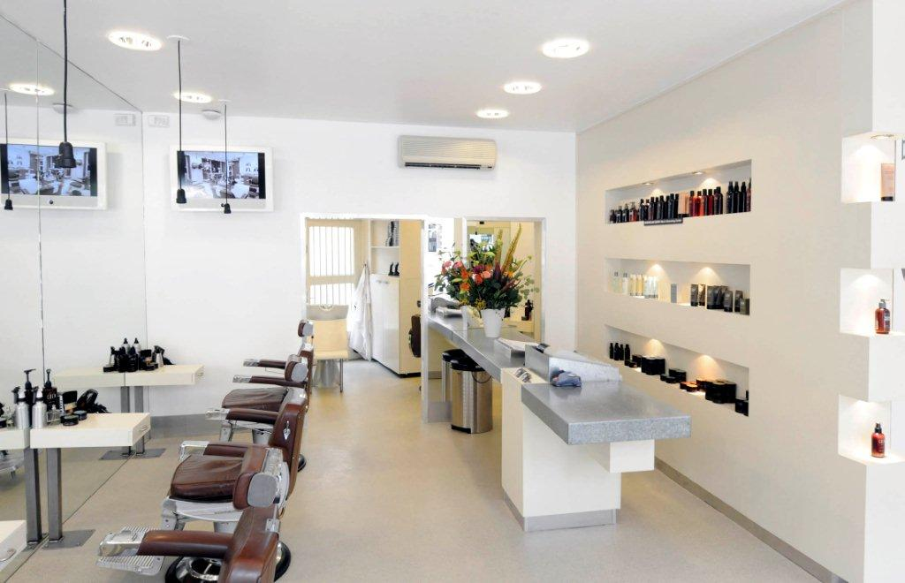
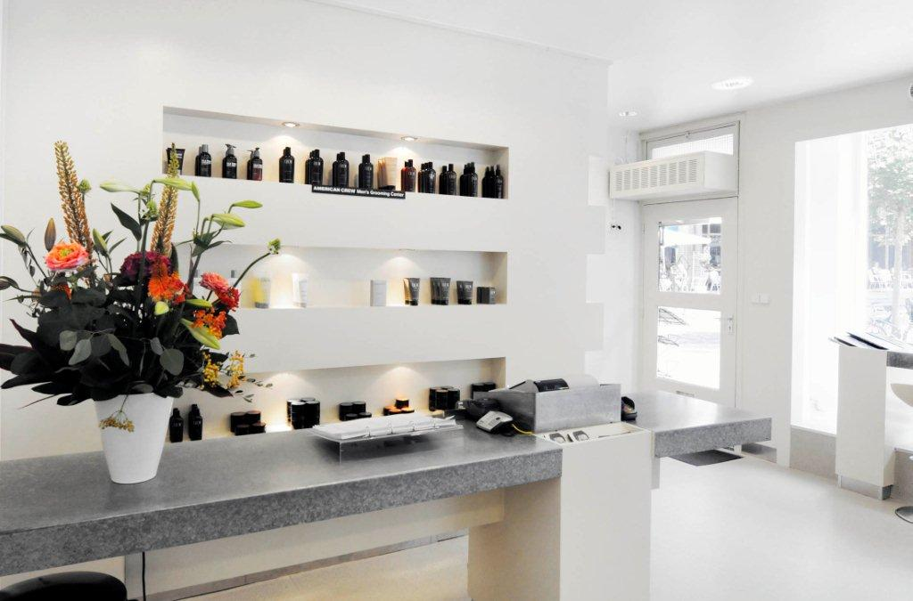
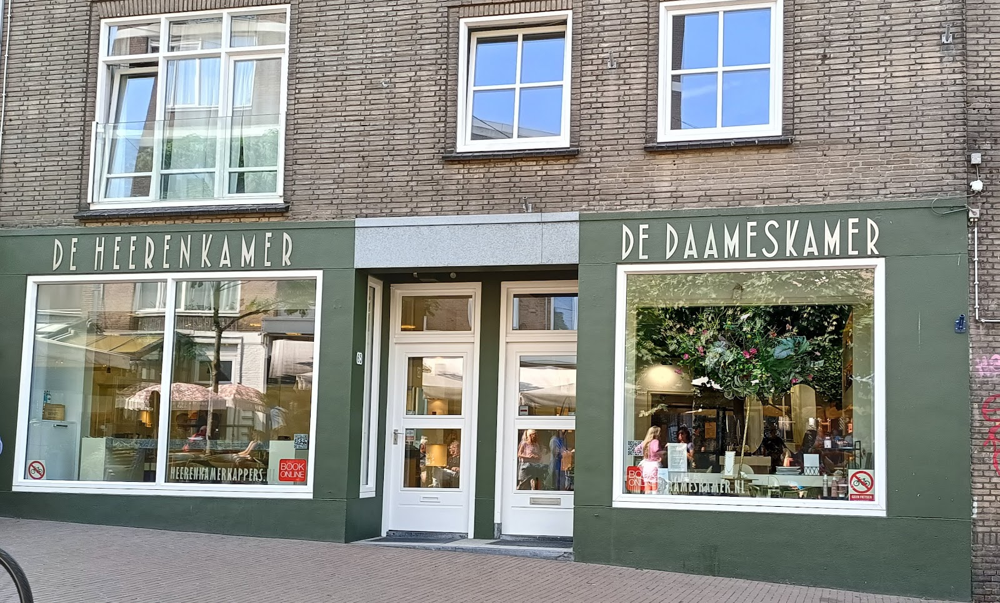

Knippen en scheren in een van de oudste straten van Nijmegen
De Heerenkamer is een klassieke barbier in de Houtstraat. Coupes en baarden volgens de laatste trends, met de tijd en de kop koffie die erbij horen.
4.9 sterren uit 100 Google-reviews

"Theo heeft aan één woord genoeg en knipt precies wat je voor ogen hebt."

Prijslijst
Wat het kost en hoe lang u in de stoel zit.
-
Wassen, knippen & stylen€48
30 minuten
-
Kleine Heeren€43
30 minuten, tot en met 16 jaar
-
Baard knippen€27
15 minuten
-
Italian shave€54
45 minuten
-
Permanente kleuring€54
60 minuten
-
Semi kleuring€47
45 minuten
-
High / low lights€39
60 minuten, richtprijs: de prijs hangt af van uw wens
De salon
Licht, rustig en met de klassieke leren stoelen waar het vak om draait. Een plek om even te zitten, bij te praten en met een goede coupe weer de Houtstraat in te lopen.


Verzorging van DEPOT
We werken uitsluitend met producten van DEPOT. Een compleet assortiment voor de man, gebaseerd op traditionele formules: echte klassiekers voor de man van nu.
Wij gebruiken de lijnen:
Hair Cleaning, Hair Treatments, Hair Styling, Shave Specifics, Beard & Moustache Specifics, Body Solutions, Skin Specifics en Scents.
Wat u in de stoel goed bevalt, neemt u gewoon mee naar huis: alle producten zijn bij ons te koop.
Wat klanten zeggen
4.9 sterren uit 100 reviews op Google
"Theo is een geweldige kapper. Altijd vrolijk, fijne man om een praatje mee te maken en verstaat zijn vak als geen ander. Naar mijn mening de beste kapper in Nijmegen."
"Ik kom er al weer een hele tijd en ik ben super tevreden. Diana knipte mij de eerste keer en ik was zo tevreden dat ik nu iedere 5 a 6 weken bij Diana terugkom. Er heerst een fijne sfeer met gezellige gesprekken onder het genot van een kop koffie. Met de fiets goed bereikbaar vanuit Nijmegen Noord."
"Super geholpen, altijd goede idee over het kapsel en een goed gesprek zoals het hoort bij de kapper onder het genot van een kop koffie!"
"Theo knipt zoals afgesproken.ik kom er al jaren, heb al veel kappers gehad. En Theo knipt steady en met variatie zoals je wilt. en gezellig bijpraten over verschillende zaken met een persoonlijke touch. dus an te bevelen."
"100 punten voor Theo! Ontzettende aanrader voor als je op zoek bent naar een kapper in het ietsjes hogere segment. Theo heeft aan één woord genoeg en knipt precies wat je voor ogen hebt. Hij is heel gastvrij en je merkt aan alles dat hij de tijd voor je neemt. Kortom: een echte vakman."
Langskomen
Houtstraat 656511 JM Nijmegen Route plannen
- Telefoon
- 024 322 1026
- info@daameskamer.nl
Openingstijden
| Maandag | 10:00 tot 18:00 |
| Dinsdag | 09:00 tot 18:00 |
| Woensdag | 09:00 tot 18:00 |
| Donderdag | 09:00 tot 18:00 |
| Vrijdag | 09:00 tot 18:00 |
| Zaterdag | 09:00 tot 16:00 |
| Zondag | gesloten |

Het groene pand met de witte letters, links van de deur.